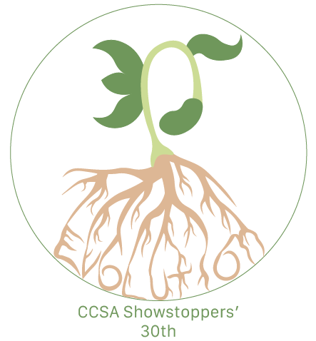
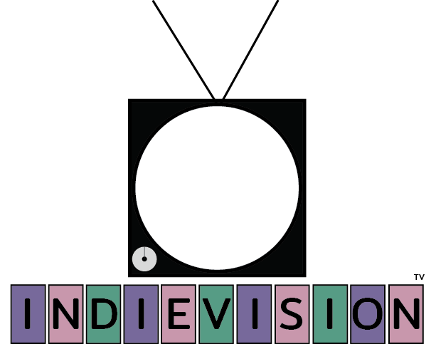

Lilit Paveza

Education
I currently attend an Arts and academic driven school, with a focus on graphic design and a side in writing.
I'm planning on doing graphic design in the future, college included, as I feel this skill will be useful
About
I'm a 16 year old, who's currently pursuing an interest in graphic design and coding, following in the foot steps of my parents.
I have interests currently in writing, dog training, and (?). With a pursuit of these interests in school currently, I'm hoping to make a career out of dog training.
I also volunteer at my local American Kennel Club equivalent, as I'm being taught how to properly judge dog shows. I also have multiple awards involving my writing, with a 3rd place in a fire safety writing contest.
In the sections below, I have examples of my digital art work along with assigned writing prompts
Art

My showstoppers logo submission for the 30th anniversay of Cab Calloway, with a theme of evolution
A Logo for practice purposes using a real location, it had a theme of feminity with a touch of old school, with the words of 'indie'

Writing
The grain that had covered the colors had dispersed, leaving only the sun to shine, blinding those unfamiliar with its kindness. It used to cause me great sorrow and grief; I missed home, but now it reminds me that while I cannot return, this piece of life gives me producing happiness throughout the time I spend on this plane. Flora and fauna around me follow the sun’s cycle; I don’t rely on it to gain energy, instead running like a machine with power from other preserved sources.
An exert of my Monster Story, featuring a mechanical creature that was created like Frankenstein with the purpose to kill.
Friday the 13th was often frowned upon, seen as a day filled with bad luck, and as such, people avoided anything important in hopes, it won’t be ruined by the day's frightful reign. Annie woke up the morning of Friday the 13th, unknowing of the date, and so she went about it as if it were any other day, packing her backpack and going to the bus stop. This is where things begin to go wrong, as the bus never arrives. It had broken down that morning, never leaving the bus lot.
An exert of my Friday the 13th writing piece, where we had to write a piece talking about the events of a Friday the 13th
Frederick had a normal childhood, well, as normal as one can have amid a zombie apocalypse. This prevented them from experiencing a lot of things they dreamed of doing. Today was when Frederick finally achieved something they’d wanted to do since entering adolescence: going on a date. This leads us to today, where Frederick is overwhelmed with thoughts and options, not aware of the things that might occur, but at the same time, unable to show these emotions. Their childhood left them angry at life for its cruelness, as it took everything from them, leaving them a lone orphan in this dark world.
An exert from my story "Ohio's next zombie apocalypse", where we were given a plotline over a class period.